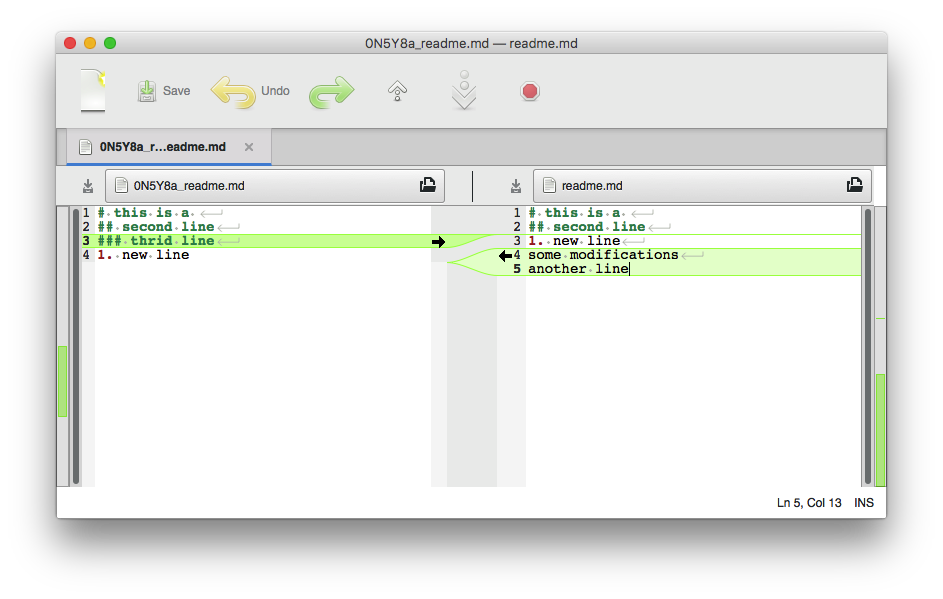

Show Current Status
$ git status
On branch master
Your branch is up-to-date with 'origin/master'.
nothing to commit, working tree clean
Tracking New File
git add YOUR_FILE_OR_FOLDER
If you run your status command again, you can see that your new file is now tracked and staged to be committed:
$ git status
On branch master
Your branch is up-to-date with 'origin/master'.
Changes to be committed:
(use "git reset HEAD <file>..." to unstage)
new file: README.md
Staging Modified Files
Let’s change a file that was already tracked. If you change a previously tracked file called readme.md and then run your git status command again, you get something that looks like this:
$ git status
On branch master
Your branch is up-to-date with 'origin/master'.
Changes not staged for commit:
(use "git add <file>..." to update what will be committed)
(use "git checkout -- <file>..." to discard changes in working directory)
modified: readme.md
no changes added to commit (use "git add" and/or "git commit -a")
To know more details you can use diff tools to see what have changed of these tracked files:
$ git diff
diff --git a/readme.md b/readme.md
index 9fd6ba9..dc23ecd 100644
--- a/readme.md
+++ b/readme.md
@@ -1,4 +1,6 @@
# this is a
## second line
-### thrid line
1. new line
+**some modifications **
+another line
+
(END)
From the output of diff tool we can see I deleted one line and add three lines.
To discard the modification you just did to last commmit:
# longqi @ LQMacPro in ~/test_project on git:master o [14:34:04]
$ git status
On branch master
(use "git checkout -- <file>..." to discard changes in working directory)
modified: readme.md
no changes added to commit (use "git add" and/or "git commit -a")
# longqi @ LQMacPro in ~/test_project on git:master x [15:40:29]
$ git checkout readme.md
# longqi @ LQMacPro in ~/test_project on git:master o [15:41:25]
$ git status
On branch master
Your branch is up-to-date with 'origin/master'.
nothing to commit, working tree clean
Ignore Files
Often, you’ll have a class of files that you don’t want Git to automatically add or even show you as being untracked. These are generally automatically generated files such as log files or files produced by your build system. In such cases, you can create a file listing patterns to match them named .gitignore. Here is an example .gitignore file:
# no .a files
*.a
# but do track lib.a, even though you're ignoring .a files above
!lib.a
# only ignore the TODO file in the current directory, not subdir/TODO
/TODO
# ignore all files in the build/ directory
build/
# ignore doc/notes.txt, but not doc/server/arch.txt
doc/*.txt
# ignore all .pdf files in the doc/ directory
doc/**/*.pdf
GitHub maintains a fairly comprehensive list of good .gitignore file examples for dozens of projects and languages at here if you want a starting point for your project.
Git Diff in an External Tool
We will continue to use the git diff command in various ways throughout the rest of the book. There is another way to look at these diffs if you prefer a graphical or external diff viewing program instead. If you run git difftool instead of git diff, you can view any of these diffs in software like emerge, vimdiff and many more (including commercial products). Run git difftool --tool-help to see what is available on your system.
Meld as shown in the figure is my favourite diff and merge tool. I highly recommend meld as your diff and merge tool. 
Committing Your Changes
Now that your staging area is set up the way you want it, you can commit your changes. Remember that anything that is still unstaged – any files you have created or modified that you haven’t run git add on since you edited them – won’t go into this commit. They will stay as modified files on your disk. In this case, let’s say that the last time you ran git status, you saw that everything was staged, so you’re ready to commit your changes. The simplest way to commit is to type git commit:
$ git commit
Doing so launches your editor of choice. (This is set by your shell’s $EDITOR environment variable – usually vim or emacs, although you can configure it with whatever you want using the git config --global core.editor command as you saw in Getting Started).
The editor displays the following text (this example is a Vim screen):
$ git commit readme.md
update default voltage setting value from 200 to 380
# Please enter the commit message for your changes. Lines starting
# with '#' will be ignored, and an empty message aborts the commit.
# Explicit paths specified without -i or -o; assuming --only paths...
# On branch master
# Your branch is up-to-date with 'origin/master'.
#
# Changes to be committed:
# modified: readme.md
#
You can see that the default commit message contains the latest output of the git status command commented out and one empty line on top. You can remove these comments and type your commit message, or you can leave them there to help you remember what you’re committing. (For an even more explicit reminder of what you’ve modified, you can pass the -v option to git commit. Doing so also puts the diff of your change in the editor so you can see exactly what changes you’re committing.) When you exit the editor, Git creates your commit with that commit message (with the comments and diff stripped out).
Alternatively, you can type your commit message inline with the commit command by specifying it after a -m flag, like this:
$ git commit -m 'update default voltage setting value from 200 to 380' readme.md
[master d08b52b] update default voltage setting value from 200 to 380
1 file changed, 2 insertions(+), 1 deletion(-)
Now you’ve created your first commit! You can see that the commit has given you some output about itself: which branch you committed to (master), what SHA-1 checksum the commit has (463dc4f), how many files were changed, and statistics about lines added and removed in the commit.
Remember that the commit records the snapshot you set up in your staging area. Anything you didn’t stage is still sitting there modified; you can do another commit to add it to your history. Every time you perform a commit, you’re recording a snapshot of your project that you can revert to or compare to later.
Skipping the Staging Area
Although it can be amazingly useful for crafting commits exactly how you want them, the staging area is sometimes a bit more complex than you need in your workflow. If you want to skip the staging area, Git provides a simple shortcut. Adding the -a option to the git commit command makes Git automatically stage every file that is already tracked before doing the commit, letting you skip the git add part:
$ git status
On branch master
Your branch is up-to-date with 'origin/master'.
Changes not staged for commit:
(use "git add <file>..." to update what will be committed)
(use "git checkout -- <file>..." to discard changes in working directory)
modified: readme.md
no changes added to commit (use "git add" and/or "git commit -a")
$ git commit -a -m 'added new benchmarks'
[master 83e38c7] added new benchmarks
1 file changed, 5 insertions(+), 0 deletions(-)
Notice how you don’t have to run git add on the readme.md file in this case before you commit. That’s because the -a flag includes all changed files. This is convenient, but be careful; sometimes this flag will cause you to include unwanted changes.
Tagging
Like most VCSs, Git has the ability to tag specific points in history as being important. Typically people use this functionality to mark release points (v1.0, and so on). In this section, you’ll learn how to list the available tags, how to create new tags, and what the different types of tags are.
Listing the available tags in Git is straightforward. Just type git tag:
# longqi @ LQMacPro in ~/PycharmProjects/Hybrid-Microgrid on git:RES_integration x [22:16:59]
$ git tag
auto_turn_on
delete_ModbusTCP
modbusTCP_end
v1.0
v1.1
v2.0
v2.0.1
v2.0.2
v2.1
v2.2
v2.3
v3.0
v4.0
Git uses two main types of tags: lightweight and annotated.
A lightweight tag is very much like a branch that doesn’t change – it’s just a pointer to a specific commit.
Annotated tags, however, are stored as full objects in the Git database. They’re checksummed; contain the tagger name, email, and date; have a tagging message; and can be signed and verified with GNU Privacy Guard (GPG). It’s generally recommended that you create annotated tags so you can have all this information; but if you want a temporary tag or for some reason don’t want to keep the other information, lightweight tags are available too.
Annotated Tags
Creating an annotated tag in Git is simple. The easiest way is to specify -a when you run the tag command:
$ git tag -a v1.4 -m "my version 1.4"
$ git tag
v0.1
v1.3
v1.4
The -m specifies a tagging message, which is stored with the tag. If you don’t specify a message for an annotated tag, Git launches your editor so you can type it in.
You can see the tag data along with the commit that was tagged by using the git show command:
$ git show v1.4
tag v1.4
Tagger: Ben Straub <ben@straub.cc>
Date: Sat May 3 20:19:12 2014 -0700
my version 1.4
commit ca82a6dff817ec66f44342007202690a93763949
Author: Scott Chacon <schacon@gee-mail.com>
Date: Mon Mar 17 21:52:11 2008 -0700
changed the version number
That shows the tagger information, the date the commit was tagged, and the annotation message before showing the commit information.
Lightweight Tags
Another way to tag commits is with a lightweight tag. This is basically the commit checksum stored in a file – no other information is kept. To create a lightweight tag, don’t supply the -a, -s, or -m option:
$ git tag v1.4-lw
$ git tag
v0.1
v1.3
v1.4
v1.4-lw
v1.5
This time, if you run git show on the tag, you don’t see the extra tag information. The command just shows the commit:
$ git show v1.4-lw
commit ca82a6dff817ec66f44342007202690a93763949
Author: Scott Chacon <schacon@gee-mail.com>
Date: Mon Mar 17 21:52:11 2008 -0700
changed the version number
Viewing the Commit History
After you have created several commits, or if you have cloned a repository with an existing commit history, you’ll probably want to look back to see what has happened. The most basic and powerful tool to do this is the git log command.
# longqi @ LQMacPro in ~/test_project on git:master o [15:59:44]
$ git log
commit d08b52b0fa2d837a47b4151c155a14342ba6e8d6
Author: longqi <*****@gmail.com>
Date: Thu Dec 15 15:56:03 2016 +0800
update default voltage setting value from 200 to 380
commit 3d7a77517bb06e44d505999240f9b8b614abec8d
Author: longqi <****@gmail.com>
Date: Tue Dec 13 17:34:33 2016 +0800
new line from longqi